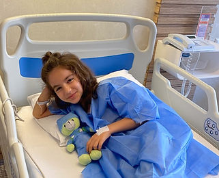

Önceki Sonraki
Platformumuz; kan, kök hücre, kemik iliği ve organ nakli gibi sağlık ihtiyaçlarında ihtiyaç sahipleri ile uygun donörleri bir araya getirmek için hazırlanmıştır. Kullanıcılar kan grubu, şehir ve ilçe gibi kriterlere göre arama yapabilir, ilan oluşturabilir ve ilanlarının güncelliğini yönetebilir.
Ayrıca hastalık ve tedavi süreçleri hakkında soru sorabilir, bilgi ve deneyimlerini paylaşabilirsiniz. Amacımız; donör bulma, ihtiyaçları duyurma ve sağlık deneyimlerini paylaşma süreçlerini tek bir platformda toplamaktır.